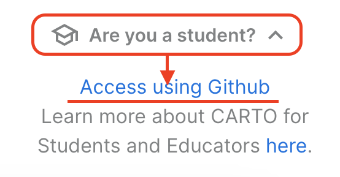
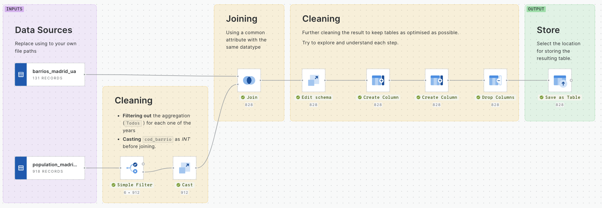
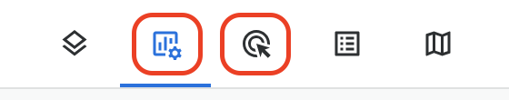

This will be an in-class hands-on session providing an introduction to the use of CARTO for publishing and styling interactive maps.
The are two excercises that will help us explore different components of the platform:
Madrid’s cycling infrastructure You will upload two .gpkg layers into the database and style as you think is best.
Madrid’s yearly population Building from last week’s excercise, we will use the full population dataset to explore the evolution in time of the spatial distribution of total residents.
Each excersice will be lead by a live demo of the main steps to better control the visualization of the datasets. Then, each student will have time to explore on their own time the tool and come up with a shereable map.
Connecting to CARTO
Because this will be the first time you log in, you will have to log in into www.carto.com using your GitHub account (you will need the Student Development Pack approved - see the Software & Accounts section).
Search for Are you a student? and Access using GitHub

Use GitHub login
Follow the stepts to create your account and note that each scholar will create a separate ‘organization’. This means all your files and maps will be yours and you will not be joining NFI’s organization. You can name ir however you like!
Part 1 - Madrid’s Cycling Infrastructure
The main goal of this excercise is to get hands on with visualizing and publishing your data.
Datasets
For this excercise we will use two official data sources. I
The best maps will be added to complete this section!
Part 2 - Madrid’s Yearly Population
Datasets
For this excercise we are going to use the same datasets than we did in our previous session. However, this time we are going to use the full dataset containing the population data.
From our previous experience, we know that in order to join the datasets, we first had to clean and filter the data. This time we are going to make use of CARTO’s WORKFLOWS: a no-code visual interface for replicating processes like cleaning, filtering, joining (and much more). Visit for more.
Hands-on
The following are the general steps we encourage you to follow to get familiar with other functions of CARTO.
Data prep
For this excerse we just want you to import the file below and update the inputs and output parameters

CARTO’s Workflow
Under menu Data Explorer –> Import both datasets (CSV and SHP)
Under menu Workflows –> Importthis SQL procedure to give you a head start
Update workflow :
Inputs: data sources according to the location and name of your files
Output: select where you want to store the results
Run the workflow to identify potential issues
Rememeber to read the Error messages (if at all), to debug your workflow
Data viz
Now we are going to move into another builder instance and load the newly created table (from the steps above). This time we encourage you to look into the other two tabs :
Widgets : allow you to interact and filter the data plotted on the map
Interactions : helps you surface propreties of individual elements in the map

Publish
When you are happy with the map make sure you SHARE your results by publishing them to allow for public access